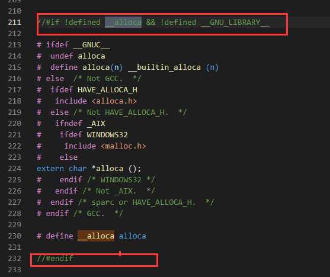

<div class="padding-tb-10 line-height">
    安装编译Make4.2.2或者4.2.1提示
    <br/>
        
        <br/>
    找到文件<span class="code-ubuntu">/make-4.2.1/glob下的glob.c</span>,注释下图两处
    <br/>
        
        <br/>
</div>